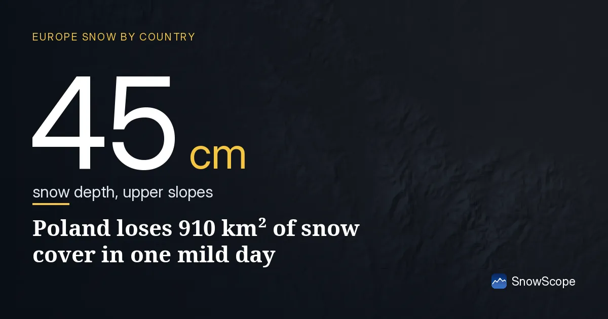

Poland loses 910 km² of snow cover in one mild day
Warm air swept across Poland on 16 November and erased 910 square kilometres of snow cover in a single day—nearly half of what lay on the ground the morning before. Only 1,170 km² of Poland's ski terrain now carries snow, down from 2,080 km² yesterday, though fresh falls are forecast to begin tomorrow.
See the live snow forecast for Orlické Záhoří in the SnowScope appSnow depth, powder alerts and the 3D map, free.
A day of rapid thaw
When I work in high mountains, I see thaw happen fast in transition seasons. Yesterday Poland held 2,080 km² under snow; today that figure has contracted to 1,170 km². The loss of 910 km² in 24 hours tells a story of mild air and thin early-season cover. At lower elevations—below 1,000 metres—snow already vanished: SnowScope shows only 6 per cent cover there now, with virtually no depth recorded. This is typical for November in the borderlands between winter and autumn.
The thaw was not uniform. Only 42 of Poland's 114 tracked resorts still report measurable snow. The snow line now sits at 1,000 metres, marking the threshold below which terrain is bare. Orlické Záhoří, the deepest site at 45 centimetres, lies just above that boundary. Everything lower has thinned or disappeared entirely.
| Resort | Snow depth | New snow, 72 h | Coming, next days | Top |
|---|---|---|---|---|
| Orlické Záhoří | 45 cm | 0 cm | 4 cm | 1,022 m |
| COS Szczyrk | 34 cm | 0 cm | 1 cm | 1,244 m |
| Karpacz | 32 cm | 1 cm | 11 cm | 1,350 m |
| Stok Karpatka | 22 cm | 1 cm | 5 cm | – |
| Kasprowy Wierch | 20 cm | 1 cm | 10 cm | 1,958 m |

Snow depth by elevation: a sharp divide
Between 500 and 1,000 metres, snow is essentially gone: mean depth is zero, and only 6 per cent of terrain is white. The band from 1,000 to 1,500 metres holds 3 centimetres on average across 73 per cent of its area—patchy and shallow. Only above 1,500 metres does winter take hold. There, mean depth reaches 13 centimetres with 100 per cent cover. The jump is sharp because altitude matters enormously in early season: a few hundred metres of elevation gain can mean the difference between rain and snow, between thaw and freeze.
This layering is fragile. Early snow is often wind-scoured at ridges and compressed in gullies; cover on south-facing slopes is thinner than on north-facing aspects. Rocks poke through thin patches. For skiers, this means choosing carefully which runs to ski and which to avoid until depth increases.
Where the depth still stands
Orlické Záhoří leads by a clear margin at 45 centimetres. The Carpathian peaks—Kasprowy Wierch at 20 centimetres, Karpacz at 32 centimetres—rank lower but remain skiable at their summits. COS Szczyrk holds 34 centimetres at 1,244 metres elevation. Stok Karpatka, by contrast, has only 22 centimetres and sits lower, making it vulnerable to further thaw. The pattern matches the map: higher peaks retain better cover because cold air settles aloft and snow does not melt as readily.
Neighbouring Slovakia shows a similar picture, with Ski centrum Dedinky leading at 48 centimetres—just 3 centimetres deeper than Poland's best. Czechia lags further behind, its highest site at only 31 centimetres. This regional consistency suggests the thaw was driven by a broad weather system, not local conditions.
Recovery begins tomorrow
The thaw will not last. The forecast shows the first significant snow to arrive on 17 November—tomorrow—with 5 centimetres expected. This marks the snowiest day of the next three days. Over the full three-day window, Karpacz may gain 11 centimetres; Kasprowy Wierch, 10 centimetres. Even COS Szczyrk will see modest gains. The snow line will drop, pushing the frost level higher into the mountains and locking in new cover.
Looking further ahead, the week of 24–30 November holds more promise. Our extended outlook shows up to 29 centimetres possible in that seven-day band. This is when sustained winter snow may accumulate and restore the thin cover we see today.
What the bands tell us next
If fresh snow arrives as forecast, the 1,000–1,500 metre band will be the first to benefit. That zone currently shows only 3 centimetres; five more centimetres of new snow will nearly double the base there and push cover toward 100 per cent. Above 1,500 metres, new snow will add to an already solid platform and strengthen the season's foundation. The 500–1,000 metre zone will remain marginal—new snow at that elevation often melts quickly during transition weather.
Skiers heading to higher terrain should expect improvement by mid-week. Lower runs will remain patchy and rocky until sustained cold and depth build up after late November.
The outlook from here
One warm day erased nearly half Poland's snow cover, a reminder that early season is volatile. But the pattern that caused the thaw—a mild southwesterly flow—is forecast to reverse. Colder air and fresh precipitation are queuing up. The drop of 910 km² in 24 hours will likely reverse course over the coming week. By late November, the forecast ensemble suggests enough snow to stabilize the season and reward patience. For now, ski the high peaks where depth and consistency are best, and watch the forecast for the turnaround on 17 November.
Tips for skiers
- Stick to terrain above 1,500 metres for the next two days: mean depth there is 13 centimetres and cover is complete. Lower runs expose rocks and thin patches.
- Karpacz will see the strongest build—up to 11 centimetres by 19 November—so plan a visit mid-week if you are flexible. Kasprowy Wierch will also gain 10 centimetres.
- Avoid south-facing aspects and open slopes today: thaw-prone terrain will be softest and safest only after temperatures drop tomorrow.
- Before skiing off-piste or in gullies, check the official avalanche bulletin for your region. Early-season snow bonds poorly; slopes carry avalanche risk even at modest angles when new snow arrives on thin base.
- Forecasts can shift; early-season precipitation is harder to predict than deep-winter storms.
About these numbers
Resort snow depths are the deepest snow on the resort's upper slopes on the date shown; they are estimates for an area, not a measurement at one point. Forecasts can change. Always read the official avalanche bulletin before going off-piste.
Cite this report
For research, teaching or the press: the numbers and charts are free to reuse under CC BY 4.0 with this citation.
SnowScope (2026), Poland loses 910 km² of snow cover in one mild day, https://snowscope.app/blog/en/2026/11/poland-snow-report-16-november-2026.html, accessed 2026-11-16
SnowScope (Atlas Labs). (2026, November 16). Poland loses 910 km² of snow cover in one mild day. SnowScope snow reports. https://snowscope.app/blog/en/2026/11/poland-snow-report-16-november-2026.html
BibTeX
@misc{snowscope2026polandsnowreport16novemb,
author = {{SnowScope (Atlas Labs)}},
title = {Poland loses 910 km² of snow cover in one mild day},
year = {2026},
month = nov,
howpublished = {\url{https://snowscope.app/blog/en/2026/11/poland-snow-report-16-november-2026.html}},
note = {Published 2026-11-16 20:42 UTC; accessed 2026-11-16}
}· CC BY 4.0 · Methods, data and tools →
Orlické Záhoří: snow and temperature by height, this winter vs last (tools) →
Follow Orlické Záhoří
Free: a message when fresh snow is coming, and the forecast every morning.
More snow reports

Tornik on Zlatibor had up to 39 cm on its upper slopes on 15 November 2026; by Wednesday it had melted. Kopaonik barely turned white. The week day by day and what comes next.

Pick a region, dates, budget and what matters; get every resort ranked with the likely snow at the start, the pass, hotel and food per person, chalets to book, and a game mode.
Himalaya snow cover in November 2026 from NASA MODIS: snow on 610,409 km² of ground above 2,000 m between the Hindu Kush and Bhutan, half the clear ground white from about 4,800 m in Nepal and 3,600 m in the Karakoram. The NDSI explained, plus shadows, cloud and the low autumn sun.